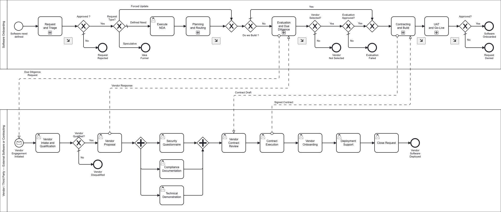
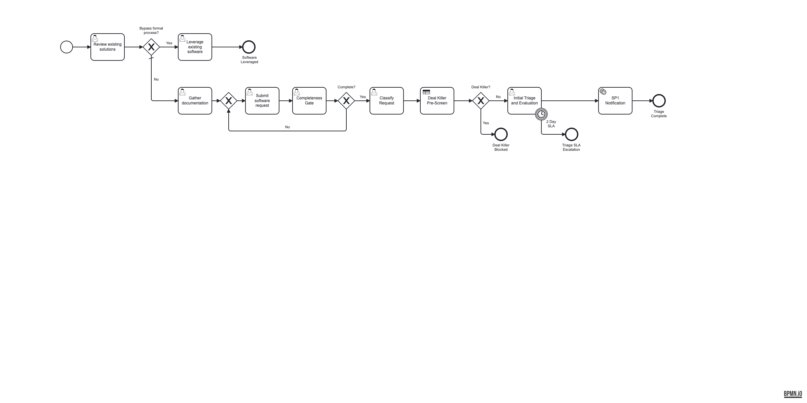
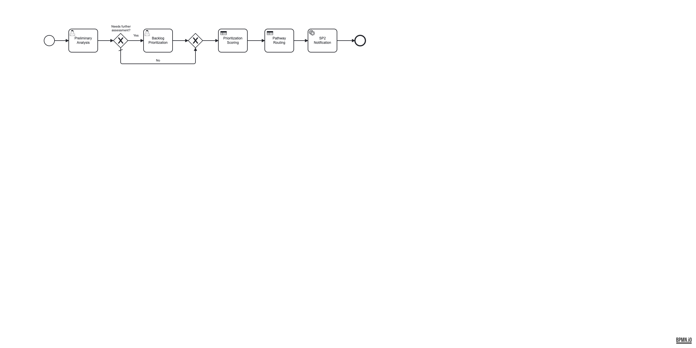
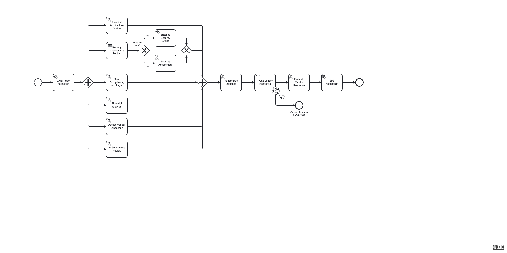
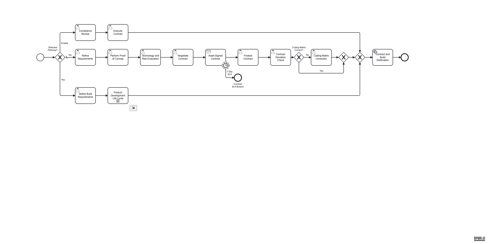
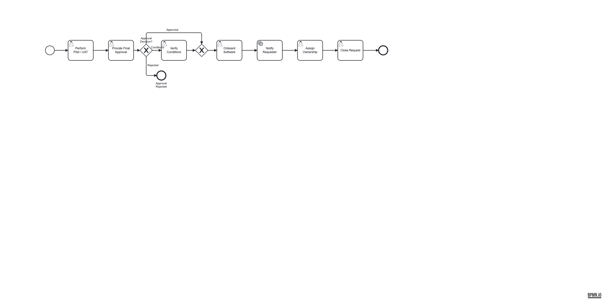

Software Onboarding
Process Transformation
Discovery Findings, Recommendations, and Implementation Roadmap
Based on 14 stakeholder sessions and 35+ interviews across Architecture, Product, Security, Risk Management, Vendor Management, Finance, Legal, and Compliance teams. Covering 11 governance domains with actionable 30/60/90/120-day implementation plans.
Agenda
Executive Overview
- Executive Summary
- End-to-End Workflow and Pain Points
- System Landscape and Integration Gaps
- Quantified Pain: By the Numbers
- Cross-Cutting Operating Models (slides 7-9)
- High-Level Roadmap (30/60/90/120)
Governance Domain Deep Dives
Each domain: Current State, Recommendations, Roadmap
- Intake (slides 11-13)
- Prioritization (slides 14-16)
- Funding / Finance (slides 17-19)
- Sourcing (slides 20-22)
- Cybersecurity (slides 23-25)
- Enterprise Architecture (slides 26-28)
.
- Compliance (slides 29-31)
- AI Governance (slides 32-34)
- Privacy (slides 35-37)
- Commercial Counsel (slides 38-40)
- Third-Party Risk Management (slides 41-43)
Future State Process Design
- Process Story & Forms (slides 44-53)
- RACI Matrix (slides 54-55)
- DMN Decision Tables (slides 56-59)
- Bottleneck Analysis
- Staffing and Resource Model
- Measurement Dashboard
Executive Summary
Current State Understanding
The software onboarding process spans 6 to 9 months end-to-end, driven by 18 sequential committees, 5+ disconnected intake channels, and critical resource bottlenecks in Security and Legal. The START initiative (9 months old) created centralized awareness but did not integrate underlying team processes. Competitors with less mature processes achieve 60-90 day cycles.
Biggest Challenges
Sequential Reviews
Requesters present to ARB, TBC, AI Governance, and DART sequentially. Each committee 5+ weeks apart with overlapping scope.
Requester Burden
DART formation falls entirely on the requester, who must independently contact 5-6 teams, submit separate intake forms, and manage scheduling.
Resource Crisis
2 people negotiate 30+ contracts/month. Security is the primary SLA bottleneck. Architecture recently reduced. "Half a person" owns the START process.
Highest-ROI Investment Areas
Parallel Evaluation
Replace 18 sequential committees with 5 parallel evaluation streams. Architecture Lead validated this model.
Unified Intake + Deal-Killer Gate
Consolidate 5+ intake channels. Block non-starters at day 1 before consuming reviewer capacity.
Contract Automation
Automate contract review for the 2-person team handling 30+/month. Identified as "Dumpster Fire #1" by TPRM Lead.
End-to-End Workflow: Current Pain Points
5+ channels
No formula
Locked forms
75 day review
#1 bottleneck
2wk ARB SLA
60+ queue
2 people
Up to 1.5yr
Critical Bottlenecks (by Impact)
| Bottleneck | Impact | Source |
|---|---|---|
| Contract Negotiation | Critical | 2 people / 30+ contracts monthly |
| Security Review Capacity | Critical | "Biggest bottleneck... reason our SLA takes 2 weeks" |
| Sequential Committees (18) | Critical | Same presentation repeated 3-4 times |
| DART Formation | Critical | Requester manages 5-6 teams independently |
| AI Governance Queue | High | 60+ items, 3 separate AI committees |
| Business Council Quorum | High | 2-3 of 8-10 members; now email voting |
What the Organization Does Well
Architecture Governance
Dedicated Governance Facilitator pre-screens artifacts, manages follow-ups, and runs ARB/SDRB. The most disciplined team interviewed.
TPRM Due Diligence
Reduced DD from 144 days to 75. Output doubled to 335 assessments/year. Vendor questionnaire completion 12 days ahead of target.
Acquisition 2.0
Brings all teams together at the start. Enables collective go/no-go at first tollgate. Acknowledged as time-consuming but necessary.
System Landscape and Integration Gaps
Data lives in 4+ systems with manual PDF exports between them. No single system of record for the onboarding lifecycle.
| System | Function | Integration Status |
|---|---|---|
| ServiceNow | START process intake | No downstream integration |
| Ariba | Registration, NDAs, contracts | API to Oracle only |
| OneTrust | Risk assessments, tracking, control gaps | Standalone, manual PDF exports |
| Oracle | Accounts payable | API from Ariba |
| Confluence + Catfox | Architecture approvals | Plugin-based, no workflow integration |
| JIRA | Architecture ticket tracking | Per-team, no cross-functional view |
| Process Orchestration Engine (target) | E2E process orchestration | Target platform |
Current: Manual Handoffs
PDF exports between OneTrust and ServiceNow. Copy-paste between Ariba and JIRA. No automated data flow across intake, assessment, and contracting.
Target: Automated Flows
Process orchestration engine coordinates across all systems via API integration. Single process instance tracks a request from ServiceNow intake through OneTrust assessment to Ariba contracting.
Quantified Pain: By the Numbers
Hard metrics from TPRM, Architecture, and Security stakeholder sessions. These data points size the operational improvement opportunity.
8-person DD team
2x the 14-day target
Down from 144 days (2019)
Handling 30+ contracts/month
Less mature processes
Mapped to 5 streams
Cross-Cutting Operating Models
Organizational design patterns that apply across all governance domains: concierge orchestration, simultaneous engagement, and distributed pods.
Concierge / Quarterback Model
Architecture's Governance Facilitator role provides the blueprint for end-to-end process orchestration across all domains.
What Works Today (Architecture)
Governance Facilitator
- Pre-screens all design artifacts
- Removes incomplete items from agenda
- Captures action items, manages follow-ups
- Runs ARB and SDRB
- JIRA integration for tracking
The most disciplined governance function identified across all 14 sessions.
Proposed E2E Extension
Process Quarterback
- Single point of contact for requesters (eliminates 5-6 team self-navigation)
- Automated DART formation (replaces requester burden)
- Quality gates at each phase boundary
- Status visibility and proactive notifications
- Cross-functional escalation authority
Eliminates the requester burden: "It's completely on the onus of the requester."
Simultaneous Engagement Model
Replace sequential DART formation with parallel engagement of all review streams. Architecture Lead's explicit recommendation.
Current State (Sequential)
Target State (Simultaneous)
3 Request Types and Distributed Pod Model
Request Type Routing
The current process treats all requests identically. v3 routes them through distinct paths based on request type.
| Type | Description | Process Path | Frequency |
|---|---|---|---|
| Defined Need | Business owner knows requirements, has vendor selected | Standard 5-phase | Most common |
| Forced Update | Existing vendor, product changes (on-prem to SaaS, EOL, new AI) | Re-evaluation path (skip intake, start at SP3) | Growing |
| Speculative / Exploratory | Advisory support, no sponsorship, generating interest | Idea funnel (pre-SP1), not standard process | Frequent, clogs pipeline |
Distributed Pod Model
Domain-specific pods controlling their own prioritization, meeting cadence, and workflow speed. Central team provides consistency.
| Pod | Controls | Central Team Provides |
|---|---|---|
| Cybersecurity | Prioritization, meeting frequency, review speed | Consistent SLA framework |
| Architecture | Technical review cadence, domain assignment | Artifact standards |
| Legal / Contracts | Contract template usage, negotiation approach | Risk appetite alignment |
| AI Governance | AI risk posture, review depth | Regulatory compliance |
| TPRM | Assessment methodology, vendor scoring | Cross-pod visibility |
Implementation Roadmap: 30 / 60 / 90 / 120 Days
The first 30 days focus on process consolidation and quick wins. Subsequent phases build automation, governance refinement, and organizational change.
Days 1-30: Consolidate
- Unified intake form replacing 5+ channels
- Deal-killer pre-screen gate and AI no-go list
- Completeness quality gate at submission
- 3 request types: Defined Need / Forced Update / Speculative
- 3-pathway routing: Buy / Build / Enable
- Concierge role definition (Architecture Facilitator model)
- Simultaneous engagement rules defined
- NDA timing decision (Security + Legal alignment)
- Prioritization scoring with capacity impact (OB-DMN-5)
Days 31-60: Automate
- Parallel evaluation replacing sequential committees
- Automated DART team formation
- Progressive forms (ask only what's needed per stage)
- Contract review automation pilot
- Security tiered assessment (baseline / elevated / major)
- AI governance consolidation (3 committees to 1 stream)
- Finance rework loop (avoid full restart)
- Workload visibility dashboard (pilot)
Days 61-90: Optimize
- AI fast-track pathway (2-week target vs 6-9 months)
- Enable pathway live (Vendor Affinity, skip funding validation)
- Time-bound conditional approvals
- Mandatory ownership assignment at onboarding
- NDA-first gate enforcement
- Automated security baseline checks
- Shift-left: self-service mini-RFP tools
- SLA enforcement with escalation ladder
Days 91-120: Scale
- Pre-onboarding idea funnel (feedback platform integration)
- Full workload dashboard across all teams
- Exception routing for rapid risk assessments
- Post-onboarding utilization tracking
- Distributed pod model pilot
- Annual ownership validation process
- Process mining and continuous improvement
- Executive KPI reporting
Intake
Initial request capture, portfolio review, and solution discovery. The front door to the onboarding lifecycle.
Intake: Current State
ServiceNow START, AI Use Case form, AI Governance form, Rapid Risk Assessment (Power Apps), email/chat. No unified routing.
First-time requesters struggle with complexity. "Nothing directly points folks to intake forms... discovered ad hoc" (Security Architect)
RAE form has 80 questions. Business partners frequently cannot complete accurately. Questions asked from the writer's perspective, not the user's.
Technology teams especially prone to bypassing standard processes. Business partners arrive with pre-selected vendors, skipping sourcing.
Incomplete submissions cascade through the process, causing rework when AI/offshoring/subcontracting requirements surface late.
Financial business case form shows 2024 in 2026. Form owner left the organization. No one can update it. Concrete example of process rot.
Defined Need (vendor selected), Forced Updates (re-evaluation), and Speculative/Exploratory requests all flow through the same process.
ServiceNow central intake (9 months old) prevents work on unapproved initiatives. Creates cross-team visibility.
RACI: R Business (submits request) | A Business (owns request) | C Governance, Compliance
Intake: Recommendations and Roadmap
Unified Intake Gateway
Single entry point absorbing all channels. Dynamic routing based on request type: Standard, AI, Exception, Vendor Partnership (Enable).
Deal-Killer Pre-Screen
DMN-driven no-go check at submission. Inputs: vendor name, AI model, data residency. Blocked requests receive immediate explanation.
Completeness Quality Gate
AI-assisted pre-screening validates minimum viable fields before routing to SME review teams. Incomplete requests returned with guidance.
Request Classification
Automated classification: Defined Need, Forced Update, or Speculative. Each type routes to the appropriate process depth.
30 Days
- Deploy unified intake form
- Implement deal-killer checklist
- Define minimum viable fields
- Retire redundant intake channels
60 Days
- Progressive form logic (stage-based questions)
- AI-assisted completeness scoring
- Integrate feedback platform
90 Days
- Self-service mini-RFP tools
- Auto-classification (DMN-driven)
- Shift-left: standard questions upfront
120 Days
- Pre-onboarding idea funnel
- Threshold-based escalation
- Full analytics on intake volume
Prioritization
Backlog ranking, pathway selection, and resource allocation. Determining where validated requests fall in the organizational roadmap.
Prioritization: Current State
Teams "horse trade" internally. Each requestor views their request as most important. No force-ranking mechanism across the enterprise.
EVP support pushes other reviews down. No SLA enforcement possible without fundamental process fixes.
Monthly meetings draw 2-3 of 8-10 members. Evolved to email voting with manual facilitation by an executive.
No auto-approval for low-risk items. No de-prioritization guidelines for exception cases.
PI planning allocates capacity to roadmap items. Exception requests create unanticipated workload, decreasing velocity. Capacity Manager has authority to decline, but no data to inform decisions.
"If the general pace of onboarding is accelerated, then we could theoretically handle one-off cases with more capacity." Fixing the standard path frees capacity for exceptions.
RACI: R A Governance | C Business, Finance, Technical Assessment
Prioritization: Recommendations and Roadmap
Quantitative Scoring Formula
DMN-driven priority scoring. Inputs: business impact, strategic alignment, urgency, risk tier, capacity availability. Output: P1/P2/P3 with recommended sequencing.
3-Pathway Routing: Buy / Build / Enable
Replace binary Buy/Build gateway with three pathways. Enable (Vendor Affinity) skips funding validation and reduces evaluation scope.
Tiered Governance Depth
Risk tier determines governance intensity. Low-risk items get streamlined review. High-risk gets full committee engagement.
Capacity-Aware Scheduling
Integrate team capacity into routing decisions. Display queue depth and estimated wait time at submission.
30 Days
- Define scoring formula
- Implement 3-pathway routing
- Publish prioritization criteria
- Establish queue transparency
60 Days
- DMN decision table deployment
- Capacity integration pilot
- Auto-routing for low-risk items
90 Days
- Enable pathway live
- AI fast-track pathway
- SLA enforcement activation
120 Days
- Full portfolio view dashboard
- Predictive wait-time estimates
- Continuous calibration
Funding / Finance
Financial analysis, budget authorization, and total cost of ownership assessment. Establishing fiscal justification before commitments are made.
Funding / Finance: Current State
Cannot reroute coding matrix issues to FP&A. Minor cosmetic corrections (dates, alignment) require full denial and restart.
Shows 2024 in 2026. Form is locked, password unknown (owner left organization). Downloaded, completed offline, uploaded to shared folder.
Vendor Affinity products require no organizational investment, but the process still requires funding justification. Creates unnecessary friction.
Hard to navigate. Business case justification required multiple times across different forms.
RACI: R A Finance | C Governance, Procurement | I Oversight
Funding / Finance: Recommendations and Roadmap
Finance Rework Loop
Add correction pathway for coding matrix issues. Minor fixes route directly to FP&A without full process restart.
Enable Pathway Bypass
Vendor Affinity requests skip funding validation entirely. DMN routing detects "no org investment" and bypasses financial gates.
Modernized Financial Form
Replace locked, outdated form with dynamic digital version. Pre-populate from intake data. Conditional fields based on pathway.
Consolidated Business Case
One business case captured at intake, enriched progressively. Eliminates repeated justification across multiple forms.
30 Days
- Replace locked form with digital version
- Define Enable pathway bypass rules
- Map financial data flow across forms
60 Days
- Finance rework loop implementation
- Pre-populated form fields from intake
- Conditional fields per pathway
90 Days
- Automated TCO/ROI calculation
- Finance dashboard integration
120 Days
- Full financial lifecycle tracking
- Budget forecasting integration
Sourcing
Vendor landscape assessment, risk evaluation, due diligence, and procurement execution. The heaviest phase of the onboarding lifecycle.
Sourcing: Current State
Target: 14 days. Actual: 28-29 days (2x target). Assigns inherent risk tier and determines DD level.
Skip logic enabled. Vendor completion: 30 days (ahead of 42-day target). Internal review: 75 days (down from 144).
They manage contract lifecycle. True sourcing activity falls on requesters.
Business partners bypass competitive sourcing, arriving with pre-selected vendors. Weakens pricing leverage.
Legal and Security align on early NDA requirement. Other teams disagree. No consistent enforcement.
"It's completely on the onus of the requester" to contact 5-6 teams, submit separate intake forms, and manage scheduling independently.
Output doubled to 335 assessments/year while reducing timeline from 144 to 75 days. Team of 8.
Risk assessments, tracking, and control gap documentation. API connections exist between Ariba and Oracle.
RACI: R Procurement | A Governance | C Compliance | I Oversight
Sourcing: Recommendations and Roadmap
NDA-First Gate
Enforce NDA execution before detailed vendor engagement. Single discussion allowed before NDA requirement triggers.
Shift-Left: Self-Service Mini-RFP
Empower requesters with structured RFP tools before formal onboarding. Codify sourcing knowledge into system. Maintains competitive pricing leverage.
Tiered Due Diligence
Risk tier determines DD depth. Low-risk: automated checks only. Medium: abbreviated review. High/Critical: full 830-question assessment.
Vendor-Level Aggregation
Single vendor spanning 10+ business units shares vendor-level compliance artifacts. Per-request assessments focus only on use-case differences.
30 Days
- NDA-first gate enforcement
- Risk-tiered DD depth matrix
- Vendor de-duplication check at intake
60 Days
- Mini-RFP template deployment
- Abbreviated DD for low-risk
- OneTrust integration optimization
90 Days
- Vendor-level artifact sharing
- Automated vendor landscape scan
- AI-assisted questionnaire routing
120 Days
- Full self-service sourcing portal
- Competitive intelligence integration
- Vendor performance scoring
Cybersecurity
Security assessment, vulnerability management, and security architecture review. The organization's #1 identified bottleneck.
Cybersecurity: Current State
Understaffed security architecture team. The primary reason ARB SLA takes 2 weeks. EA could "get our SLA way down" without security constraints.
Request volume increasing continuously, specifically for AI reviews. Current process cannot scale with existing staffing.
Teams don't know minimum security controls. Enforcement is "fairly loose." Only a fraction of systems covered by identity management.
Technology risk management, cybersecurity, and third-party risk management each contact the vendor independently. Creates redundancy and vendor frustration.
All routing manual. No workflow integration. Dependency on individual knowledge. "People don't know how to do this here."
"Can't improve due to lack of resources, buy tools to help, need resources to support new tools, half-implemented solutions, cycle continues."
Local software, platform-based, previously approved domains, updates to existing platforms, module additions, and hybrid. Each merits different scrutiny levels.
RACI: R A Technical Assessment | C Governance, Compliance
Cybersecurity: Recommendations and Roadmap
Tiered Security Assessment
DMN-driven. Inputs: risk tier + data classification + AI component. Baseline: automated checks only. Elevated: automated + manual. Major: full assessment + pen test.
Consolidated Vendor Contact
Single coordinated vendor engagement for security, replacing 3 independent contact points. One questionnaire, one relationship manager.
Security Baseline Definition
Define minimum control requirements (the "secure by design" standard). Publish baseline, elevated, and major control hierarchies.
Parallel Evaluation (not Sequential)
Security runs concurrently with Architecture, Compliance, and Financial reviews. Architecture Lead's "simultaneous engagement" model.
30 Days
- Define 3-tier assessment framework
- Consolidate vendor contact point
- Document baseline controls
60 Days
- Automated baseline security checks
- Parallel evaluation deployment
- AI review stream consolidation
90 Days
- Full tiered assessment live
- Automated pen test scheduling
- Security SLA enforcement
120 Days
- Security posture dashboard
- Continuous monitoring integration
- Risk-based resource allocation
Enterprise Architecture
Architecture review, integration planning, and technology standards compliance. The most disciplined governance function identified.
Enterprise Architecture: Current State
Dedicated facilitator pre-screens all designs, removes incomplete artifacts from agenda, manages follow-ups. Runs both ARB and SDRB.
Present, start workflow, reviews by security, EA leaders, distinguished architects. SDRB: same-day if no issues.
Every design has a JIRA ticket. Facilitator documents notes and action items. Approvers ask questions in tickets.
Cursor AI for diagram generation. Custom AI agent scans design documents for pattern conformance.
HLD required for all acquisitions. PSS for cross-enterprise products (most AI). SDD for single domain. Requesters often confused about which path applies.
"People have to review at ARB, then go to TBC, then AI governance." Architecture questions asked by non-architects in other forums.
4 EA leaders oversee multiple domains. Recently reduced. "If they want us to pursue all of that work, they need to fund us appropriately."
Items spanning multiple domains don't fit the domain-assignment model. Most AI products fall into cross-enterprise category.
RACI: R A Technical Assessment | C Governance
Enterprise Architecture: Recommendations and Roadmap
Scale the Governance Facilitator Model
The Architecture Facilitator role is the blueprint for the broader end-to-end "quarterback." Expand this concierge model across all governance domains.
Define Clear Committee Scope
Architecture questions asked by architects only. TBC covers business case. AI Governance covers AI-specific risks. No overlapping scope.
Simultaneous Engagement Model
"When a request comes in, simultaneous engagement of all major players that have a vote." Replaces sequential ARB, TBC, AI Gov gauntlet.
Domain-Based Auto-Assignment
Automated routing based on requesting domain. EA leader to architect by bandwidth. Cross-enterprise items flagged for special handling.
30 Days
- Document committee scope boundaries
- Define concierge role requirements
- Map domain-to-architect routing
60 Days
- Launch simultaneous engagement pilot
- Automated domain routing
- Consolidated artifact requirements
90 Days
- Concierge role operational
- Cross-committee scope enforcement
- AI agent for pattern conformance
120 Days
- Full parallel evaluation model
- Architecture metrics dashboard
- Workload-based resource planning
Compliance
Regulatory compliance review, legal assessment, and data protection obligations across OCC 2023-17, GDPR/CCPA, SOX, DORA, and EU AI Act.
Compliance: Current State
PII found in uncontrolled systems. Compliance enforcement is "fairly loose." No consistent standard for escalation triggers.
Risk, Legal, Privacy, and Compliance each conduct their own review without shared findings or coordinated assessment.
TBC business case overlaps with financial review. Architecture teams assessing financials (outside expertise). Financial teams assessing architecture.
No structured format for tracking contract deviations. Unknown compliance status for older contracts.
Teams recognize OCC 2023-17, DORA, and EU AI Act requirements. Enterprise Risk Management developing decision matrices.
Assessment evidence automatically captured. Control gaps documented. Contract deviations recorded. Foundation for automated compliance audit trail via API integration.
RACI: R A Compliance | C Governance, Oversight
Compliance: Recommendations and Roadmap
Consolidated Compliance Stream
Single compliance review stream combining Risk, Legal, Privacy, and Compliance assessments. Shared findings database eliminates duplicate work.
Regulatory Annotation Framework
Every process task mapped to applicable regulations. OCC 2023-17, DORA, GDPR/CCPA, SOX, EU AI Act. Automated compliance artifact generation.
Contract Deviation Tracking
Structured format for recording and reporting contract deviations in OneTrust. Automated alerting for expiring risk acceptances.
Compliance Quality Gates
Phase-boundary compliance checks at each transition. Automated validation that required artifacts exist before advancing.
30 Days
- Map regulatory requirements per phase
- Define consolidated compliance stream
- Create deviation tracking template
60 Days
- Shared compliance findings database
- Automated compliance artifact generation
- Phase-boundary quality gates
90 Days
- Full regulatory annotation deployment
- Contract deviation dashboard
- Automated risk acceptance expiry alerts
120 Days
- Compliance analytics and trending
- Regulatory change management process
- Audit readiness reporting
AI Governance
AI and ML risk classification, model validation, bias assessment, and the organization's most urgent governance challenge.
AI Governance: Current State
Multiple tools submitted for the same function with no alignment to AI strategy. "Crawl, walk, run" messaging rejected by stakeholders.
AI Risk Working Group, AI Cyber Review, AI Risk Review, AI Governance Committee. Working Committee "somewhat redundant with TBC process." Sequential processing adds months.
Causes extended vendor negotiations. External firms frequently push back on AI terms. Different teams have varying risk acceptance thresholds. EU AI Act landscape "ever-changing, different every other day."
"I have no idea why they're there... I'm really annoyed that they're even in existence." Working to merge into single dataset.
Unclear if adding models to existing packages constitutes new use cases. MCP technology didn't exist 18 months ago. Standards still forming.
Technology risk, cybersecurity, and TPRM each contact vendor independently for AI-specific questions. Creates redundancy and frustration.
RACI: R A AI Review | C Technical Assessment, Compliance | I Governance
AI Governance: Recommendations and Roadmap
Consolidate 3 AI Committees to 1 Stream
Single AI governance review stream replacing Working Group, Cyber Review, Risk Review, and Governance Committee. Cross-functional representation in one meeting.
AI Fast-Track Pathway
Pre-defined risk posture for common AI scenarios. AI tools run AI Governance + Security in parallel only (skip financial, vendor landscape unless triggered).
Unified AI Questionnaire
Merge 3 "snuck up" questionnaires into single dataset. One vendor engagement, one questionnaire, distributed findings to all reviewing teams.
AI No-Go List
Communicate non-starter models/vendors early. Enterprise Risk Management decision matrix for immediate red/green light determinations at intake.
30 Days
- Publish AI no-go list
- Define single AI review stream
- Merge questionnaires
60 Days
- AI fast-track pathway pilot
- Consolidated AI committee
- Unified vendor engagement
90 Days
- Pre-defined AI risk posture
- AI-specific SLA targets (2 weeks)
- Automated AI classification
120 Days
- Full AI governance lifecycle
- Model inventory and tracking
- EU AI Act compliance framework
Privacy
Data protection impact assessment, data classification, and cross-border data transfer compliance under GDPR, CCPA, and emerging privacy frameworks.
Privacy: Current State
Privacy SME participates in vendor risk reviews, AI governance, and compliance. No dedicated privacy review stream in the current process.
End-of-year compliance failures include PII discovery outside managed environments. Data classification not consistently enforced at onboarding.
Different teams have varying risk acceptance thresholds for AI-related privacy concerns. No unified privacy risk classification.
Many RAE questions about data hosting, storage, and transmission could be resolved through proper sourcing events before formal assessment.
Active participation in vendor risk and AI governance sessions demonstrates organizational awareness of privacy requirements.
Organization has established privacy policies. Challenge is consistent application during software onboarding, not absence of policy.
RACI: R A Compliance (Privacy) | C Governance, Business
Privacy: Recommendations and Roadmap
Data Classification at Intake
Mandatory data classification fields in the unified intake form. Determines privacy review depth: DPIA required vs. standard review vs. no PII.
Privacy Review as Parallel Stream
Dedicated privacy evaluation branch running concurrently with security and compliance. Not embedded ad hoc across other reviews.
Unified Privacy Risk Classification
Single privacy risk framework replacing team-by-team thresholds. DMN-driven: inputs include data types, volumes, cross-border flows, AI usage.
Early Data Residency Screening
Data hosting, storage, and transmission requirements validated at sourcing stage. Prevents late-stage discovery of cross-border transfer issues.
30 Days
- Add data classification to intake
- Define privacy review triggers
- Map data residency requirements
60 Days
- Parallel privacy review stream
- Unified risk classification
- DPIA automation template
90 Days
- Cross-border transfer validation
- Privacy-by-design checklist
- Automated PII detection
120 Days
- Privacy impact dashboard
- Regulatory change monitoring
- Annual privacy audit process
Commercial Counsel
Contract negotiation, legal terms review, SOW/MSA redlining, and execution of vendor agreements. The area with the most acute resource crisis.
Commercial Counsel: Current State
Manual review process sustained for 4 years at unsustainable levels. Contract lifecycle management system requested for 5-6 years without funding.
Security exhibits drive the longest negotiations. No reportable format for contract deviations. Unknown compliance status for older contracts.
Legal bottleneck forces sourcing team into areas beyond their expertise. Creates risk and potential liability.
Legal capacity hasn't scaled with organizational growth. Solutions often underused after purchase.
Legal and Security want NDA first. Other teams disagree. No consistent organizational policy enforcement.
Contract workspace exists in Ariba for registration, NDAs, and vendor registration. Platform exists but isn't fully used.
RACI: R A Contracting | C Finance, Governance, Compliance | I Oversight
Commercial Counsel: Recommendations and Roadmap
Contract Review Automation
AI-assisted contract review for standard clauses, redlining, and deviation detection. Human review reserved for non-standard terms and high-risk provisions.
Standardized Contract Templates
Pre-approved MSA/SOW templates by vendor tier and risk classification. Reduces negotiation scope for standard engagements.
Parallel Contracting
Begin contract negotiation in parallel with due diligence (not sequentially). Architecture Lead and TPRM Lead both endorse concurrent processing.
Contract Deviation Register
Structured tracking of all contract deviations with risk classification, expiry dates, and automated alerting for review cycles.
30 Days
- Template library for standard contracts
- Parallel contracting process design
- Deviation tracking format
60 Days
- Contract review automation pilot
- AI redlining for standard clauses
- Deviation register deployment
90 Days
- Full parallel contracting live
- Automated deviation alerting
- Contract analytics dashboard
120 Days
- CLM system evaluation/procurement
- Historical contract remediation
- Vendor contract scoring
Third-Party Risk Management
Vendor lifecycle management, ongoing monitoring, concentration risk assessment, and the backbone of OCC 2023-17 compliance.
TPRM: Current State
ServiceNow (intake), Ariba (contracts), OneTrust (risk), Oracle (AP). Data lives in 4+ systems with manual PDF exports between them.
"Somebody needs to be empowered to say I own this... we will not allow you to do it any other way." START assigned "half a person."
No clear ownership for incident communication. Same questions asked multiple times. "We're all doing the same thing to be helpful."
Business Owner identified. Vendor Owner tracked by TPRM team of 6. Product/Tech Owner weakly tracked, often different from requesting team.
144 days (2019) to 75 days (current). Output doubled to 335 assessments/year. Vendor questionnaire completion ahead of target.
Risk assessments, tracking, control gaps. API connections to Ariba and Oracle. Foundation for integration.
"That's a fantastic idea that should be in the slides." Risk-based self-service options, mini-RFP tools, standard questions available upfront.
Less mature competitors achieving 60-90 day end-to-end cycles. Sets external reference point for target state.
RACI: R A Governance | C Procurement, Contracting, Technical Assessment, Compliance | I Oversight
TPRM: Recommendations and Roadmap
Empowered Process Owner
Dedicated strategic owner with authority and resources: 1 workflow manager, 2-3 project managers. Models the Architecture Facilitator role at enterprise scale.
Mandatory Ownership Assignment
Business Owner, Technical Owner, and Support Owner assigned at onboarding completion. Annual ownership validation. Feeds CMDB and asset register.
Integrated System of Record
Connect ServiceNow, Ariba, OneTrust, and Oracle into unified workflow. Eliminate manual PDF exports and cross-system data entry.
Incident Response Coordination
Single vendor contact point for security incidents and data breach notifications. Clear ownership matrix: who communicates, who investigates, who remediates.
30 Days
- Define process owner role and authority
- Ownership assignment form design
- Incident communication matrix
60 Days
- Process owner appointment
- System integration requirements
- Mandatory ownership at onboarding
90 Days
- OneTrust-Ariba-ServiceNow integration pilot
- Incident response playbook
- Annual ownership validation design
120 Days
- Full integrated system of record
- TPRM analytics dashboard
- Concentration risk monitoring
Future State Process Design
A 5-phase hierarchical process model with 64 structured forms, 6 DMN decision tables, and parallel evaluation streams — reducing onboarding from 75 days to 20.
End-to-End Process Orchestrator
Hierarchical 5-phase model with collapsed sub-processes, 5 decision gateways, vendor pool with message flows, NDA gate, and 3 request type routing (Defined Need, Forced Update, Speculative).

Request and Triage
The front door to onboarding. Requesters describe their need, existing solutions are checked for reuse, documentation is gathered, and requests are triaged, classified, and routed.

Key Decisions
- Bypass Gate: Can an existing solution fulfill the need?
- Completeness Gate: Automated validation before classification
- Request Type: Defined Need → NDA → Planning | Forced Update → Fast-track | Speculative → Idea Funnel
Forms & Data Collected
- Review Existing — catalog search, reuse decision, cost avoidance
- Gather Documentation — business case, data classification, budget authorization
- Completeness Gate — 6 automated validation checkpoints
- Initial Triage — strategic alignment score, risk indicators, duplicate detection
- Classify Request — type determination driving downstream routing
Planning and Routing
Validated requests are analyzed for strategic fit, scored for priority, and routed to Buy, Build, or Enable pathways via DMN decision tables.

Key Decisions
- Needs Backlog? Does the request need full backlog prioritization or can it proceed directly?
- Pathway Routing (DMN): Automated Buy / Build / Enable pathway assignment based on risk tier, complexity, and strategic alignment
- Priority Scoring (DMN): Composite score driving resource allocation
Forms & Data Collected
- Preliminary Analysis — business impact, risk appetite alignment, DPIA screening, capacity impact score, vendor affinity check
- Backlog Prioritization — strategic value, urgency, resource availability, priority tier assignment
Evaluation and Due Diligence
The most complex phase. Five parallel assessment streams evaluate simultaneously — eliminating the sequential bottleneck that currently takes 75 days.

Tech Architecture
Scalability, integration, enterprise standards
Security
Encryption, MFA, pen testing, SOC 2, incident response
Risk & Compliance
GDPR, OCC 2023-17, DORA, data residency
Financial
TCO, ROI, budget authorization, funding source
Vendor Landscape
Market research, shortlist, viability scoring
Evaluation: Forms and Data Architecture
The heaviest data collection phase: 8 structured forms capture 147+ fields across security, risk, financial, vendor, and AI governance dimensions.
Security Assessment
25 fields across 6 groups
- Security tier classification (6 levels)
- Encryption at rest/transit, key management
- Vulnerability scan results, pen test dates
- Breach history, incident response SLA
- SOC 2 Type II, ISO 27001 certifications
Tech Architecture Review
18 fields
- Architecture pattern, deployment model
- Integration points, API compatibility
- Scalability and performance ratings
- Tech debt and maintainability assessment
Risk, Compliance & Legal
15 fields
- Regulatory exposure assessment
- Data residency, cross-border transfer
- Consent management, DPIA results
- OCC 2023-17 / DORA alignment
Financial Analysis
16 fields
- Total cost of ownership model
- ROI projection, payback period
- Budget authorization chain
- Funding source identification
AI Governance Review
32 fields — largest single form
- EU AI Act risk classification
- Model transparency, explainability
- Bias testing, fairness metrics
- SR 11-7 model risk alignment
Vendor Due Diligence
18 fields + vendor landscape (11 fields)
- Financial stability, operational resilience
- Fourth-party risk, subcontractor disclosure
- Market positioning, viability scoring
- Weighted evaluation matrix
Contracting and Build
Two pathways converge here. Buy: refine requirements, proof of concept, contract negotiation. Build: define requirements, then the full Product Development Life Cycle (PDLC).

Buy Path Forms
- Refine Requirements — final spec from evaluation insights
- Proof of Concept — structured PoC with pass/fail criteria
- Negotiate Contract — OCC 2023-17, DORA Art. 30, GDPR Art. 28 provisions
- Finalize Contract — internal approvals, term verification
Build Path Forms
- Define Build Requirements — functional specs, architecture constraints
- Architecture Review — enterprise standards validation
- Development — secure coding, CI/CD pipeline tracking
- Testing & Integration — test coverage, defect resolution, deployment
UAT and Go-Live
The finish line. User acceptance testing validates the solution, final approval confirms governance compliance, software is onboarded, ownership is assigned, and the request is formally closed.

Key Activities
- Pilot / UAT: Structured testing with pass/fail criteria, defect tracking, user satisfaction scoring
- Final Approval: Third line of defense governance sign-off based on complete evidence package
- Condition Verification: For conditional approvals, verify all conditions met before onboarding
- Dual Ownership: Business Owner + Vendor Owner assigned at completion
Forms & Data Collected
- Perform UAT — test scenarios, pass/fail rates, critical defects, user satisfaction (1-10)
- Final Approval — governance sign-off, risk acceptance, audit evidence
- Onboard Software — catalog entry, access provisioning, monitoring setup
- Assign Ownership — Business Owner + Vendor Owner designation
- Close Request — lessons learned, satisfaction survey, archive
Vendor Pool: The External Partner Journey
Running in parallel with the enterprise process, vendors follow their own structured journey. 10 tasks span intake through deployment support, with message flows synchronizing handoffs at key milestones.
Vendor Intake
Proposal
Tech Demo
Security & Compliance
Contract
Deploy & Close
- Vendor Intake — legal entity, tax ID, ownership, sanctions screening, insurance
- Security Questionnaire — SOC 2, pen testing, encryption, incident response
- Compliance Documentation — regulatory certifications, DPA, sub-processor disclosures
- Contract Execution — MSA, schedules, authorized signatory verification
Message Flow Handoffs
→ Due Diligence Request
Enterprise sends RFP/assessment requirements to vendor
← Vendor Response
Vendor submits proposal and completed questionnaires
→ Contract Draft
Enterprise sends negotiated contract for vendor review
← Signed Contract
Vendor returns executed contract with authorized signature
End-to-End Process Flow
5-phase hierarchical process model with 6 DMN decision tables, 3 request type routing, Buy/Build/Enable pathways, and parallel evaluation streams.
Request and Triage
Planning and Routing
Evaluation and Due Diligence
Contracting and Build
UAT and Go-Live
64 Structured Forms
Every data point, decision, and approval captured in structured fields — no email attachments, no PDFs, no manual handoffs
6 DMN Decision Tables
Risk Tier, Pathway Routing, Governance Routing, Prioritization, Security Assessment, SLA Escalation
3 Pathways + 3 Request Types
Buy / Build / Enable pathways. Defined Need, Forced Update, Speculative routing
20-Day E2E Target
Down from 75 days through parallel evaluation, automated gates, and DMN-driven routing
RACI Matrix by Governance Topic
| Topic | Business | Governance | Finance | Procurement | Contracting | Technical | AI Review | Compliance | Oversight | Automation | Vendor |
|---|---|---|---|---|---|---|---|---|---|---|---|
| Intake | R/A | C | C | - | - | - | - | C | - | - | - |
| Prioritization | C | R/A | C | - | - | C | - | - | - | - | - |
| Funding | - | C | R/A | C | - | - | - | - | I | - | - |
| Sourcing | - | A | - | R | - | C | - | C | I | - | R |
| Cyber | - | C | - | - | - | R/A | - | C | - | - | C |
| EA | - | C | - | - | - | R/A | - | - | - | - | C |
| Compliance | - | C | - | - | - | - | - | R/A | C | - | C |
| AI Governance | - | I | - | - | - | C | R/A | C | - | - | - |
| Privacy | C | C | - | - | - | - | - | R/A | - | - | - |
| Comm. Counsel | - | C | C | - | R/A | - | - | C | I | - | R |
| TPRM | - | R/A | - | C | C | C | - | C | C | C | C |
R = Responsible | A = Accountable | C = Consulted | I = Informed | Finance = new functional area (split from Governance per discovery findings)
Governance Topic Coverage Across Onboarding Phases
Hover over any cell to see the tasks that address each governance topic in that phase.
| Governance Topic | Request and Triage |
Planning and Routing |
Evaluation and Due Diligence |
Contracting and Build |
UAT and Go-Live |
Vendor Pool |
|---|---|---|---|---|---|---|
| Intake | ✓Review Existing, Leverage Existing, Gather Docs, Submit Request, Initial Triage |
✓Close Request |
||||
| Prioritization | ✓Preliminary Analysis, Backlog Prioritization, Pathway Routing |
|||||
| Funding | ✓Gather Documentation |
✓Preliminary Analysis |
✓Financial Analysis |
✓Negotiate Contract |
||
| Sourcing | ✓Assess Vendor Landscape, Vendor DD, Evaluate Response |
✓Refine Requirements, Perform PoC |
✓Vendor Intake, Proposal Submission, Contract Execution |
|||
| Cyber | ✓Security Assessment, Tech Architecture Review |
✓Tech Risk Evaluation, Perform PoC |
✓Integration Testing |
✓Vendor Security Questionnaire |
||
| EA | ✓Tech Architecture Review, Perform PoC |
✓Tech Risk Evaluation, PDLC Sub-Process |
✓Onboard Software |
✓Vendor Demo |
||
| Compliance | ✓Initial Triage |
✓Risk Compliance Legal, Vendor DD |
✓Finalize Contract |
✓Final Approval, UAT |
✓Vendor Compliance Review |
|
| AI Governance | ✓Preliminary Analysis (AI flag) |
✓AI Governance Review, Risk Compliance Legal |
||||
| Privacy | ✓Gather Documentation |
✓Preliminary Analysis |
✓Risk Compliance Legal |
|||
| Comm. Counsel | ✓Negotiate Contract, Finalize Contract |
✓Vendor Contract Review, Contract Execution |
||||
| TPRM | ✓Initial Triage |
✓Risk Compliance Legal, Vendor Landscape, Vendor DD, Evaluate Response |
✓Tech Risk Evaluation, Negotiate Contract, Finalize Contract |
✓Final Approval, Onboard Software |
✓Vendor Intake, Vendor Onboarding, Close Request |
DMN Decision Tables: Risk Tier Classification
OB-DMN-1: Risk Tier Classification
Hit Policy: UNIQUE Phase 2, Task 2.3Evaluates 5 risk dimensions (1-10 scale each) to assign one of 4 risk tiers. Unacceptable tiers terminate the onboarding immediately.
| Data Sensitivity | Regulatory Exposure | Operational Criticality | AI Complexity | 3rd-Party Dependency | Risk Tier | Eligible? |
|---|---|---|---|---|---|---|
| ≥ 9 | ≥ 9 | - | - | - | Unacceptable | No |
| ≥ 9 | - | ≥ 9 | - | - | Unacceptable | No |
| - | ≥ 9 | ≥ 9 | - | - | Unacceptable | No |
| ≥ 9 | - | - | ≥ 8 | - | Unacceptable | No |
| - | - | - | ≥ 9 | ≥ 9 | Unacceptable | No |
| ≥ 7 | ≥ 7 | - | - | - | High | No |
| ≥ 7 | - | ≥ 7 | - | - | High | No |
| - | ≥ 7 | - | ≥ 6 | - | High | No |
| - | - | ≥ 7 | - | ≥ 7 | High | No |
| [4..7) | [4..7) | - | - | - | Limited | Yes |
| [4..7) | - | [4..7) | - | - | Limited | Yes |
| - | [4..7) | [4..7) | - | - | Limited | Yes |
| - | - | [4..7) | [3..6) | [4..7) | Limited | Yes |
| < 4 | < 4 | < 4 | < 3 | - | Minimal | Yes |
| < 4 | < 4 | < 4 | - | < 4 | Minimal | Yes |
DMN Decision Tables: Pathway and Governance Routing
OB-DMN-2: Pathway Routing
UNIQUE Phase 1Routes to Fast-Track, Standard-Buy, Standard-Build, or Hybrid based on 6 inputs.
| Reuse | Build/Buy | Capacity | Strategic | TtV | Vendor? | Pathway |
|---|---|---|---|---|---|---|
| ≥8 | "Buy" | - | - | ≥7 | true | Fast-Track |
| ≥7 | "Buy" | - | ≥7 | ≥7 | true | Fast-Track |
| - | "Buy" | - | - | - | - | Standard-Buy |
| - | "Build" | ≥6 | - | - | - | Standard-Build |
| - | "Hybrid" | - | - | - | - | Hybrid |
| - | "Build" | <6 | - | - | - | Hybrid |
OB-DMN-3: Governance Routing
UNIQUE Phase 4Routes governance review to Advisory Board, Committee, Fast Path, or Auto-Approve based on risk tier and pathway.
| Risk Tier | Pathway | Review Body | SLA |
|---|---|---|---|
| Unacceptable | - | Rejected | - |
| High | - | Advisory Board | 7 days |
| Limited | Standard-* | Committee | 5 days |
| Limited | Fast-Track | Fast Path | 2 days |
| Minimal | Fast-Track | Auto-Approve | 1 day |
| Minimal | Standard-* | Fast Path | 2 days |
DMN Decision Table: SLA Breach Escalation
OB-DMN-4: SLA Breach Escalation Routing
Hit Policy: FIRST Cross-Cutting4-level escalation ladder triggered by SLA timer boundary events. Ordered by severity (most critical matched first).
| Breached Phase | Days Beyond SLA | Risk Tier | Escalation Action | Notify | Auto-Action |
|---|---|---|---|---|---|
| Phase3, Phase4 | ≥ 15 | High | Auto-Reject | Board + Sponsor | Terminate process |
| Phase3, Phase4 | ≥ 10 | High | Board-Alert | Advisory Board | Escalation meeting |
| Any | ≥ 10 | Limited | Escalate-Governance | Governance Lead | Priority reassignment |
| Phase1, Phase2 | ≥ 5 | High | Escalate-Governance | Governance Lead | Priority reassignment |
| Any | ≥ 5 | Limited | Notify-Sponsor | Business Sponsor | Status update |
| Phase5 | ≥ 5 | - | Notify-Sponsor | Business Sponsor | Status update |
| Phase1, Phase2 | ≥ 3 | Minimal | Notify-Sponsor | Business Sponsor | Email reminder |
| Phase3 | ≥ 7 | - | Escalate-Governance | Governance Lead | Vendor follow-up |
| Phase4 | ≥ 5 | Minimal | Notify-Sponsor | Business Sponsor | Committee scheduling |
| Any | ≥ 2 | - | Monitor | Process Owner | Dashboard alert |
DMN Decision Tables: Prioritization and Security Routing
OB-DMN-5: Prioritization Scoring
FIRST Phase 2Scores requests for backlog prioritization. 5 inputs produce a priority tier (P1/P2/P3) determining queue position.
| Business Impact | Strategic Align. | Urgency | Risk Tier | Capacity | Priority |
|---|---|---|---|---|---|
| ≥8 | ≥8 | ≥8 | High | - | P1 |
| ≥8 | ≥7 | - | - | ≥5 | P1 |
| ≥5 | ≥5 | ≥5 | Limited | - | P2 |
| ≥5 | - | ≥7 | - | ≥5 | P2 |
| <5 | <5 | <5 | Minimal | - | P3 |
| - | - | - | - | <3 | P3 |
OB-DMN-6: Security Assessment Routing
UNIQUE Phase 3Routes security review depth based on risk tier, data classification, and AI component presence.
| Risk Tier | Data Class. | AI Component? | Assessment | SLA |
|---|---|---|---|---|
| High | Confidential | true | Major | 10 days |
| High | Confidential | false | Major | 10 days |
| High | Internal | true | Elevated | 5 days |
| Limited | Confidential | - | Elevated | 5 days |
| Limited | Internal | true | Elevated | 5 days |
| Limited | Internal | false | Baseline | Same-day |
| Minimal | - | false | Baseline | Same-day |
| Minimal | - | true | Elevated | 5 days |
Onboarding Bottleneck Analysis: Before vs. After
Key delay drivers identified during stakeholder interviews mapped against projected improvements from the proposed governance model.
75 Days → 20 Days
Total E2E cycle reduction through parallel processing and DMN-driven routing
18 → 4 Committees
Consolidated governance committees with tiered review paths
335 Assessments/Year
Current volume processed through the new automated intake and triage pipeline
60+ AI Queue → 0
Backlog eliminated with dedicated AI governance lane and SR 11-7 framework
Staffing and Resource Model
Cross-functional staffing gaps identified through stakeholder interviews. Automation investment is justified by these capacity constraints.
| Function | Current Staffing | Workload | Gap |
|---|---|---|---|
| Risk / DD Team | 8 people | 335 assessments/year | At capacity Doubled output while cutting timeline |
| Legal / Contracts | 2 people | 30+ contracts/month | Critical "Dumpster fire" per TPRM Lead |
| Architecture | 2-3 people | ARB + SDRB reviews | Reduced Funding-constrained by domains |
| Security Architecture | ~1 person for AI | All AI security reviews | Critical "Need three of me" |
| Vendor Management | 6 total, 2 at 50% | Full process facilitation | Insufficient No formal allocation |
| Technology Vendor Mgmt | 1 person part-time | Full START process | Critical Inadequate for scope |
Measurement Dashboard: Day 120 Targets
Key performance indicators with current baselines and Day 120 targets. These metrics enable data-driven proof of improvement.
| Metric | Baseline (Current) | Day 120 Target |
|---|---|---|
| E2E cycle time (standard) | 6-9 months | 60-90 days |
| E2E cycle time (Enable) | Same as standard | 30 days |
| E2E cycle time (AI fast-track) | Same as standard | 14 days |
| RAE completion | 28-29 days | 14 days |
| DD internal review | 75 days | 30 days |
| Security review (Baseline tier) | 2 weeks | Same-day (automated) |
| Form completion rate | Unknown | 90%+ first-pass |
| Intake rejection (deal-killer) | 0% (no pre-screen) | Measured |
| Contract cycle time | Varies (up to 1.5yr) | 90 days standard |
| Business Council decision | Monthly + email | 48-hour async SLA |
| Requester satisfaction | Unmeasured | NPS baseline established |
| Queue transparency | None | Real-time dashboard |
Interactive Governance Topic Explorer
Topic Journeys: Intake, Prioritization, Funding, Sourcing
Intake
- Review Existing
- Leverage Existing
- Gather Docs
- Submit Request
- Initial Triage
- Close Request
Prioritization
- Preliminary Analysis
- Backlog Prioritization
- Pathway Routing
Funding
- Gather Docs
- Prelim Analysis
- Financial Analysis
- Negotiate Contract
Sourcing
- Vendor Landscape
- Vendor DD
- Evaluate Response
- Refine Reqs
- Perform PoC
Topic Journeys: Cyber, EA, Compliance, AI Gov, Privacy
Cyber
- Security Assessment
- Tech Arch Review
- Tech Risk Eval
- Perform PoC
- Integration Test
Enterprise Architecture
- Tech Arch Review
- Perform PoC
- Tech Risk Eval
- PDLC Sub-Process
- Onboard Software
Compliance
- Initial Triage
- Risk Compliance Legal
- Vendor DD
- Finalize Contract
- Final Approval
- UAT
AI Governance
- Prelim Analysis (AI flag)
- AI Governance Review
- Risk Compliance Legal
Privacy
- Gather Docs
- Prelim Analysis
- Risk Compliance Legal
Topic Journeys: Commercial Counsel and TPRM
Commercial Counsel
- Negotiate Contract
- Finalize Contract
- Contract Review
- Execution
TPRM (Third-Party Risk Management)
- Initial Triage
- Risk Compliance Legal
- Vendor Landscape
- Vendor DD
- Evaluate Response
- Tech Risk Eval
- Negotiate
- Finalize
- Final Approval
- Onboard Software
- Intake
- Onboarding
- Close